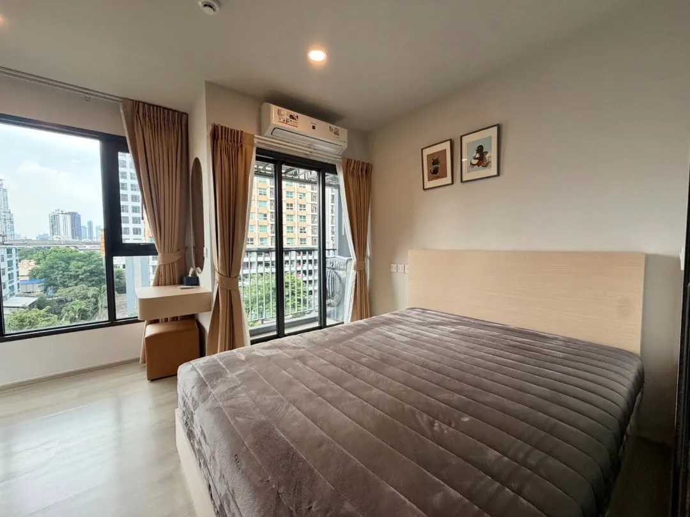
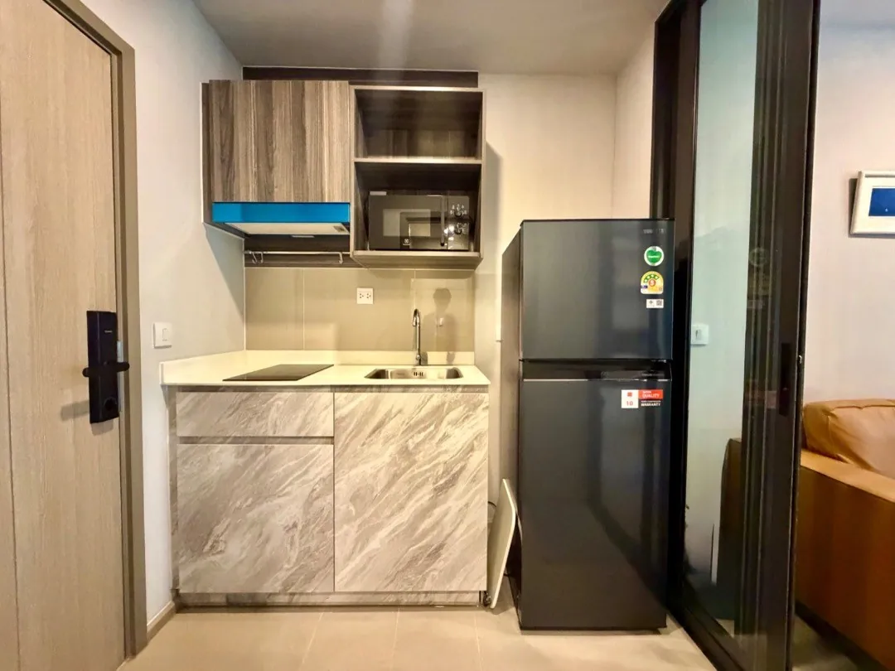
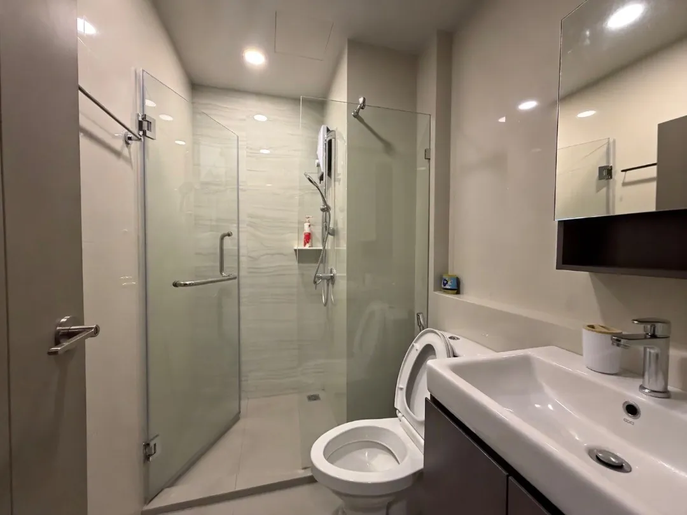

CHIANG MAI MASSAGE ONNUT
สปา · ประมาณ 3 นาที
4.4 จาก 902 รีวิว · คะแนนจาก Google (12 พ.ย. 2569)
เปิดใน Google Maps





ย่านอ่อนนุช · 34 ตร.ม. · 1 ห้องนอน · รหัส MC-001
ห้องมุมเฟอร์นิเจอร์บิลต์อิน โทนน้ำตาลอุ่นและครีม ลมผ่านสบายตลอดวัน ที่ Aspire Onnut Station ย่านอ่อนนุช ใกล้ Lotus's On Nut
ให้เช่า Aspire Onnut Station | 1 Bed 34 ตร.ม. ห้องมุม 22,000 บ./เดือน | BTS อ่อนนุช 200 ม. | พร้อมอยู่
1 Bedroom | 1 Bathroom
34 SQ.M. | Corner Unit
Built-in Furniture | Warm Brown & Cream Tone
Good Airflow with a gentle breeze throughout the day
200 ม. จาก BTS อ่อนนุช | 200 m. to BTS On Nut ใกล้ Lotus’s On Nut
ค่าเช่า 22,000 /เดือน | THB 22,000/mo
• มัดจำ 2 เดือน + ล่วงหน้า 1 เดือน
• สัญญาขั้นต่ำ 1 ปี Minimum 1 year contract
สถานีรถไฟฟ้าและร้านดังใกล้เคียงในรัศมีประมาณ 1.5 กม.
ร้านด้านล่างเป็นสถานที่จริงใกล้โครงการ ระยะเดินเป็นค่าประมาณ · อ่านหน้าย่านอ่อนนุช
สปา · ประมาณ 3 นาที
4.4 จาก 902 รีวิว · คะแนนจาก Google (12 พ.ย. 2569)
เปิดใน Google Mapsช็อปปิ้ง · ประมาณ 6 นาที
4.2 จาก 1,372 รีวิว · คะแนนจาก Google (12 พ.ย. 2569)
เปิดใน Google Mapsร้านอาหาร · ประมาณ 10 นาที
4.6 จาก 293 รีวิว · คะแนนจาก Google (12 พ.ย. 2569)
เปิดใน Google Mapsช็อปปิ้ง · ประมาณ 10 นาที
4.5 จาก 587 รีวิว · คะแนนจาก Google (12 พ.ย. 2569)
เปิดใน Google Mapsร้านอาหาร · ประมาณ 11 นาที
4.5 จาก 664 รีวิว · คะแนนจาก Google (12 พ.ย. 2569)
เปิดใน Google Mapsคาเฟ่ · ประมาณ 18 นาที
4.3 จาก 1,861 รีวิว · คะแนนจาก Google (12 พ.ย. 2569)
เปิดใน Google Maps